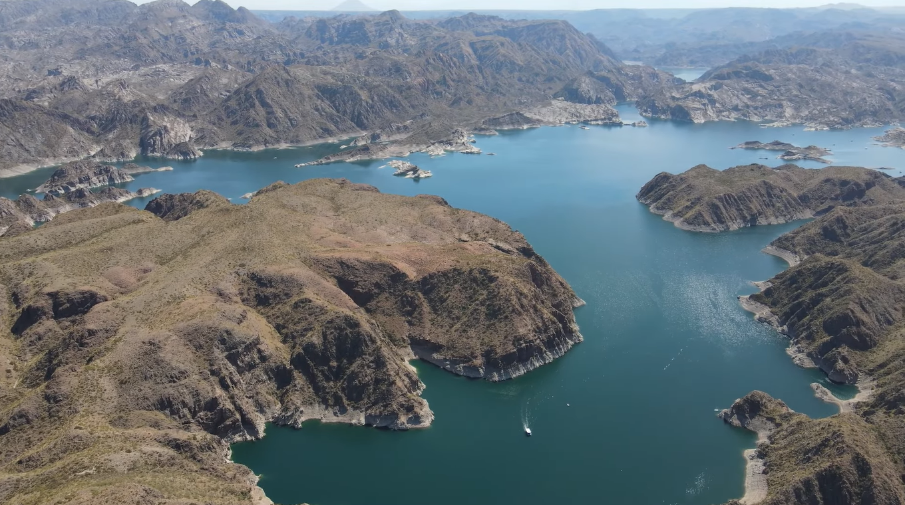
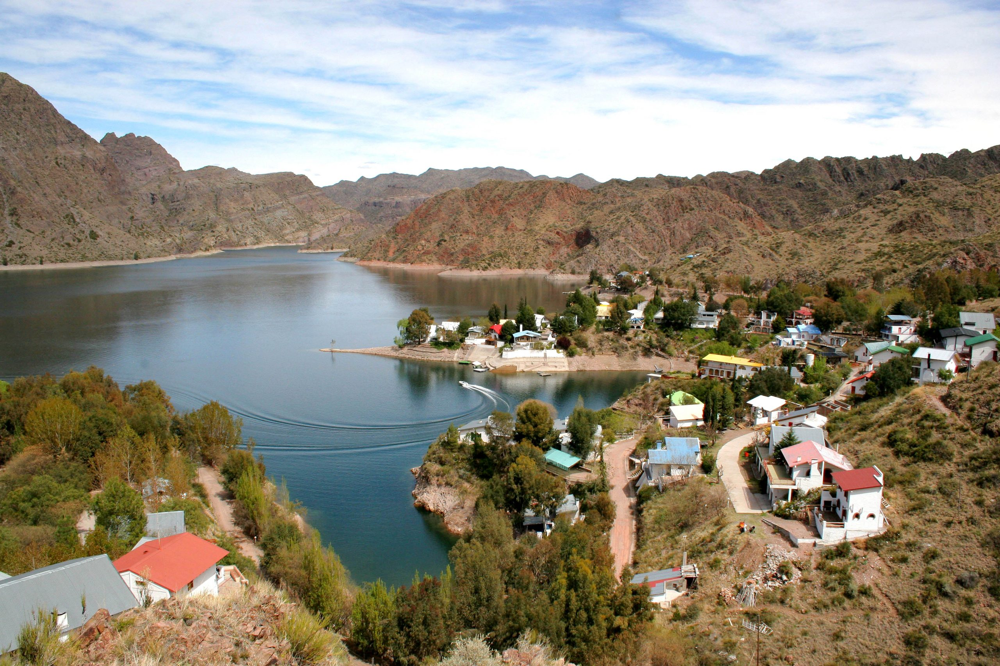
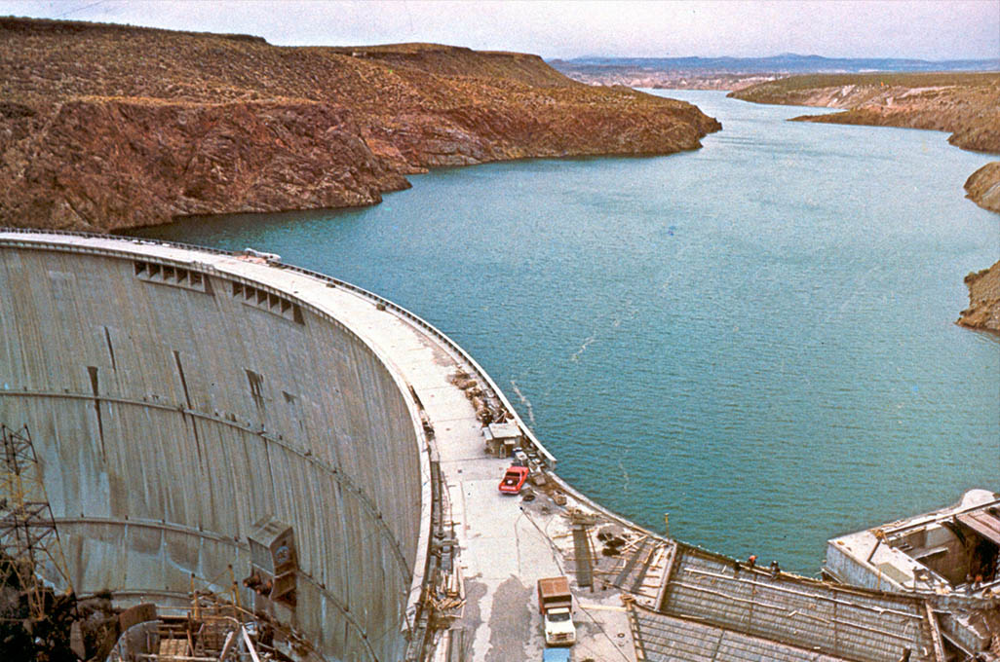
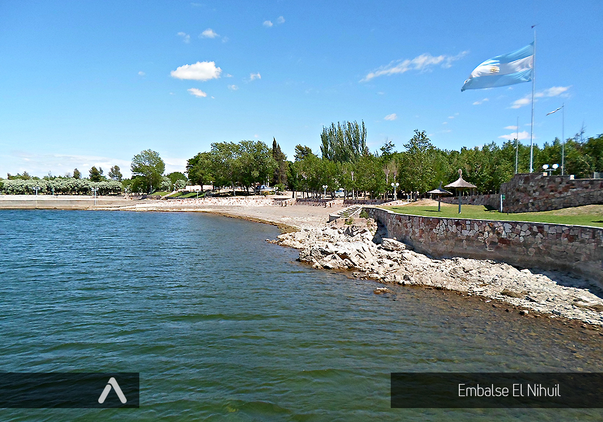

Lugares turisticos para visitar 🚣♂️
San Rafael, ubicado en la provincia de Mendoza, Argentina, es un destino turístico que ofrece una gran variedad de paisajes naturales y actividades al aire libre. Aquí te presento una descripción de algunos de los lugares más emblemáticos para visitar:
- 
- 
- 
- 
Valle Grande
Este majestuoso valle es uno de los principales atractivos turísticos de San Rafael. Con su imponente cañón tallado por el río Atuel, el Valle Grande es ideal para realizar deportes de aventura como rafting, kayak, tirolesa y trekking. Además, cuenta con una amplia oferta de alojamientos y campings donde se puede disfrutar de la naturaleza en su máximo esplendor.
Ver video: Valle Grande
Los Reyunos
Este embalse se encuentra rodeado de montañas y es un lugar perfecto para quienes buscan tranquilidad y contacto con la naturaleza. Los Reyunos es famoso por sus aguas cristalinas, ideales para la pesca deportiva, el buceo y paseos en lancha. También es un sitio excelente para acampar o pasar un día de picnic en familia.
Ver video: Los Reyunos
Agua del toro
Conocido por su impresionante presa, Agua del Toro es un sitio de gran belleza natural. La represa crea un lago profundo que es perfecto para la pesca y los deportes acuáticos. La zona también es ideal para realizar excursiones y disfrutar de vistas panorámicas que te dejarán sin aliento.
Ver video: Agua del Toro
El Nihuil
Este gran embalse es uno de los más grandes de Mendoza y se encuentra a una altitud considerable, lo que le confiere un clima fresco y agradable. En El Nihuil, se puede practicar windsurf, kitesurf y otros deportes acuáticos. Además, el área circundante es perfecta para realizar safaris fotográficos y explorar las dunas que rodean el lago.
Ver video: El Nihuil